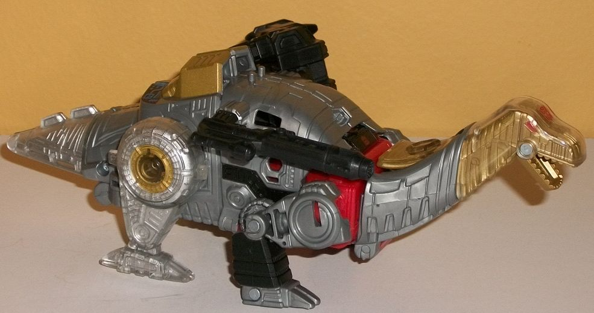
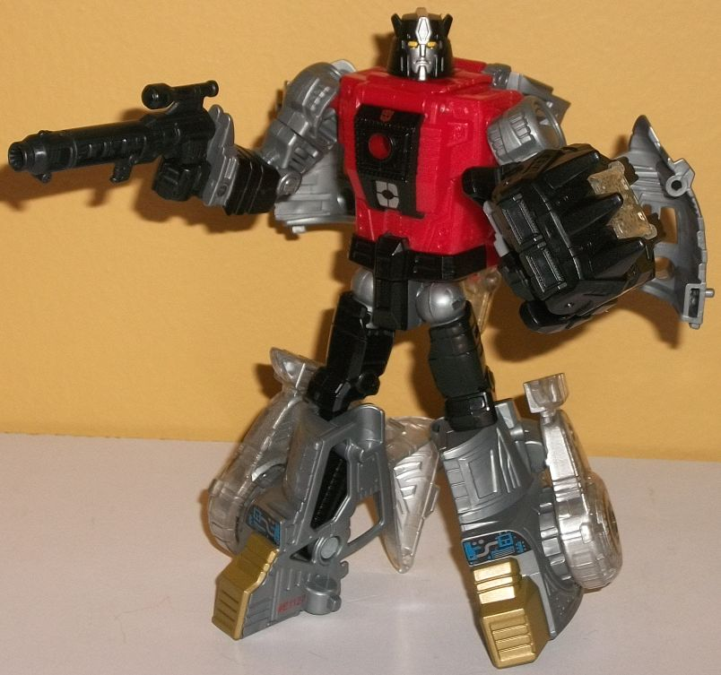
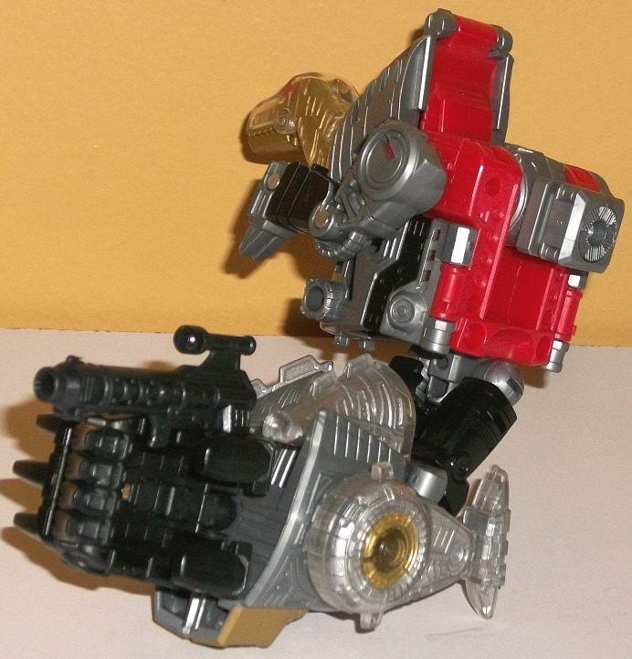
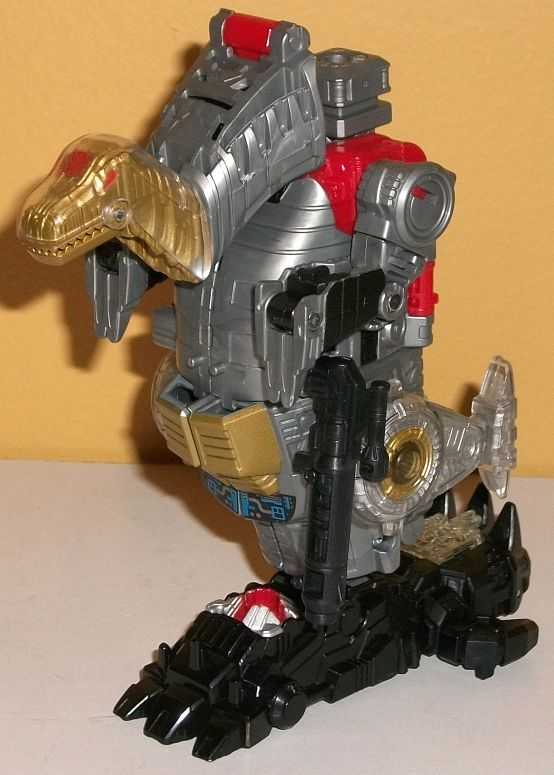

Allegiance
: Autobot
Size
: Deluxe
Difficulty of Transformation to Robot
:
Medium
Difficulty of Transformation to Leg
:
Very Easy
Difficulty of Transformation to Arm
:
Easy
Color Scheme
: Milky gray, red, black,
and some metallic gold, silver, orangish "cheesy" yellow, dark red, and
clear plastic
Rating
: 8.2


Like with the other
PotP Dinobots, Sludge's beast mode is quite G1-accurate, being more of
an "old-timey" brontosaurus than a more "modern" apatosaurus. Those Dinobots,
they just can't seem to get their robotic fictional alt modes out of the
'80s... Well, anyways, obviously being a sauropod as a deluxe he's not
really to scale with the other Dinobots, but by himself his proportions
are pretty good. He's got a decently long neck-- it could be longer, but
he's got to form limbs here as well, so it can't stick out TOO much-- and
a pretty hefty and bulbous main body. The tail is a bit overly short for
a sauropod, though, and it's here that it's worth noting a few parts are
shared between PotP Sludge and
Slug
. It's not
nearly enough for me to consider Sludge a mere "remold" of Slug, but the
robot legs/back end of the dino body are shared between the two toys, as
well as some minor parts like the combiner connector port, the Prime armor,
and the gun. Because of the construction of said back end of the dino mode
and how the robot legs fold out from them, the tail can't be as long as
it should be proportionally; it wouldn't fold away enough behind the robot
legs. Also because of this shared construction, although Sludge's legs
are new, his rear legs aren't as long as they should be, given they have
to fold up against the robot legs in robot mode. (Either that, or the front
legs-- which form Sludge's robot arms-- are too long. Take your pick.)
Other than the robot feet bumps on the back, there isn't any obvious kibble
in this mode, and the mold detailing is quite good on the transparent bits,
with lots of little tech ridges and details on the inside of the pieces,
which are then painted either silver or metallic gold. This is always a
good look, and makes Sludge fit right in with the rest of the PotP Dinobots
as well. There's some more cybernetic-type details on the rest of his body,
including a detailed angular line going down most of the main body, but
they aren't quite as impressive as the details on the clear plastic. As
with any PotP Dinobot, Sludge's main color is a milky gray plastic, and
is used for a majority of his body in this mode. There's some bits of red
and black here and there as well to help break up the colors a bit, and
there's the aforementioned gold and silver paint on the transparent plastic
to give him that unique Dinobot feel there. There's also two black-and-blue
decal-like paint apps near his rear, behind the leg humps on his back.
For articulation in this mode, Sludge can move at the jaw, back-and-forth
at the shoulders, at the front knees (at two points), and back-and-forth
at the rear hips. (The rear feet look like they should move, but it's all
one piece.) So, okay articulation, but not great. There's two holes near
the top sides this mode that you can plug Sludge's Power Armor and/or gun
onto, though they definitely don't fit in with the surrounding pieces that
well. Finally, there's two small pegs on the top of this mode for a Prime/Titan
Master to stand on.
Sludge's transformation
is very similar to Slug's, but the body is reversed. In other words, the
robot legs fold out from the back and rotate around at the waist, the front
dino legs form the robot arms, the bronto head folds up diagonally slightly
and folds behind his back, and then the shell halves that form his dino
body fold out from in front of the chest and form large "wings" behind
the toy, as opposed to where on Slug they're just a big mass behind the
main body that never needs to fold out of the way in the first place. The
end result is a decent-looking robot mode, but with a pretty good amount
of kibble. The dino halves are the most egregious, just hanging off the
middle back and not really even trying to be hidden-- they're not high
enough to frame his shoulders or act as "wings", either, so that's a bummer.
The dino head is pretty obvious from behind the back if you look at Sludge
from any angle other than head-on, but it stays out of the way of movement,
so that's a minor issue. The rear dino legs also just hang off the lower
robot legs in a rather haphazard, obvious manner, and the dino tail pieces
could stand to fit into their "alcoves" behind the lower legs better, although
they still do an okay job. Sludge's main robot body is well-proportioned
overall (though he could be a bit more barrel-chested given his character),
with a decent amount of robotic detailing. It also adds some red to this
mode, and combined with black helps break up this mode a bit more on a
color-basis from all the gray, though gray is still definitely the main
color, here. The headsculpt is very well-done, with crisp details showing
two small antennae coming out of a slightly narrowed helmet, a forehead
crest, and a normal-looking face with yellow eyes. Silver paint is also
done on the head and forehead crest, and a bit of black paint is done on
the middle of the chest, along with a "targeting reticle-like detail" on
his stomach. For articulation, Sludge can move at the neck, shoulders,
elbows (at two points), slightly downwards at the wrists, waist rotation,
and movement at the hips (at two points) and knees. Thus, his feet could
stand to be a tad less clunky, but otherwise he's pretty poseable. As with
other PotP deluxes, he can fit his Prime Armor piece on his chest, but
it looks weird and is generally best forgotten about.


For arm mode, you take
Sludge's robot mode, and first you combine his legs together and rotate
them at the waist while plugging in his Prime Armor to form his lower arm
and hand. Then you fold his robot head into his dino head, while rotating
his arms/front dino feet, flipping his dino body-halves back into their
dino configuration, and flipping out his combiner port from his robot back.
The lower part of this mode looks pretty solid; the proportions are pretty
nice, and the tail sections fold away nicely enough. The dino legs do stick
out a little, but here their skinnyness works to the mode's advantage,
as they don't "bulk out" from the lower arm mode. The upper arm/shoulder
is more or less good as far as the "core" of it, but the robot arms/dino
front legs are obnoxiously obvious, and the pegs they're supposed to fit
into are too shallow and don't really hold the appendages in place nearly
as well as they should. The dino head and neck, while compacted a bit because
of their configuration, just stick out too much from the side of the shoulder;
finding some way to fold them back more above the shoulder instead of having
them come out from the side of would've looked better, methinks. As with
most PotP arm modes, Sludge can move at the shoulder (at two points), at
the elbow (at two or three points, depending upon how you bend the arm),
at the wrist, at the base of each thumb, and at the base of the four fingers
on his hand (all as one piece; they don't move individually).
Sludge's leg mode is--
more or less-- his dino mode facing upwards. The head and neck rotate backwards
and form that same "crooked neck" configuration that compacts the neck
some, while the combiner port flips up in its place. The tail sections
are folded back into the body, and then you just kinda fold together the
dino legs slightly-- but not much. (And then, of course, you pop in a Voyager
Prime Armor piece and his own deluxe Prime Armor piece to become the foot.)
I do kinda like the crooked Sludge neck for a "kneecap", although I still
think it extends out a bit too far from the knee, even compressed as it
is. Having the foot piece in place of the tail is also an excellent choice
aesthetically, but again, those dino limbs... need to fold up better, or
fold in somewhere, or something. They just kinda stick out, partially ruining
the otherwise great silhouette of the leg, given the slight bulge in the
center of the leg mode that tapers off slightly to the foot below. As with
basically all combiner leg modes, in this mode Sludge can move at two spots
at the knee/combiner peg, and rotate at the ankle due to how the foot piece
plugs in.
PotP Sludge's biggest issue is some pretty darned obvious kibble in robot mode, and some uneven legs in dino mode. Compared to most of the other PotP Dinobots, that's pretty small potatoes when you consider the rest of him being relatively well-proportioned and well-articulated, with some cool paint and mold details across his entire body. His partial mold-sharing with Slug when it comes to the legs also hurts him slightly, but he's still definitely one of the better PotP Dinobots.
Review by Beastbot